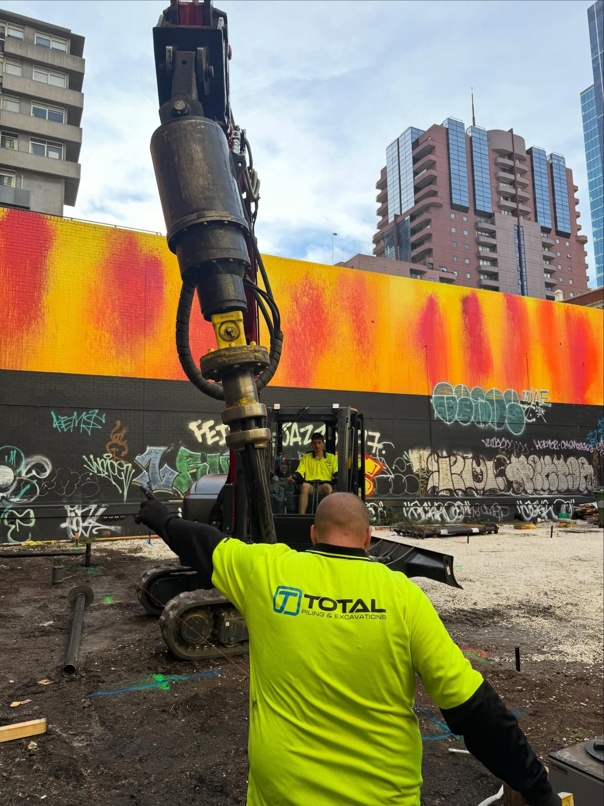

Subsiding heritage homes
Older Melbourne homes built on shallow footings or unreinforced strip foundations, now settling unevenly after decades of reactive-clay movement.
Existing structures
Screw pile underpinning across Melbourne, Echuca, and Victoria. Stabilise settling foundations, cracking walls, and uneven floors with minimal excavation. Mini-excavator works through doorways and side gates - most families stay in the house. AS2159 engineered, load-tested, certified.
What it is
Underpinning is what you do when an existing foundation can no longer carry the structure above it. Reactive clay shifts under most of Melbourne, drains under the slab change moisture content, tree roots pull water out from one side of the house, or the original footings were just never deep enough for what got built on top. The symptoms show up later: stair-step cracks in brickwork, doors that catch on the jamb, floors that have visibly tilted.
Screw pile underpinning is the cleanest fix available. We drive engineered screw piles to load-bearing depth at points around the existing footing, then transfer the structural load from the failing original foundation onto the new pile system. The mini-excavator works through doorways and side gates, the spoil is minimal, and most jobs are done in one to three days. Families typically stay in the house the whole time.
The new pile system bypasses the unstable upper soil that caused the original movement. Once the load is locked off, settlement stops - permanently.

The specs
Engineered to AS2159, sized to the symptom, installed around the family's day.
Typical timeline
1 to 3 days
Most residential underpinning jobs are done inside three days. Larger commercial work scales accordingly.
Site disruption
Low
Mini-excavator through doorways and side gates. Minimal excavation, minimal spoil, no large concrete pours.
Family stays
Yes, in most cases
Work happens around the perimeter or at engineered access points. No live structural risk during the install.
Compliance
AS2159 + load-tested
Engineered design, install torque recorded per pile, load testing where specified, full certificate handed over.
When underpinning fits
Common scenarios on Victorian sites. If your situation sounds like one of these, send photos and we'll come back with next steps.
Older Melbourne homes built on shallow footings or unreinforced strip foundations, now settling unevenly after decades of reactive-clay movement.
Perimeter slab movement on relatively new homes, often where landscaping or drainage changes have altered the soil moisture around the footings.
Recently built homes that have settled more than expected. Common when the original soil report missed an unstable layer or fill was not fully compacted.
New extensions where the existing footings can't carry the additional load. Underpin first, then build the addition onto a stable foundation.
Standard across much of Melbourne. Clay swells in wet seasons, shrinks in dry, and existing footings that never reached the stable layer move with it.
Houses on slopes that have crept downhill over time, often combined with poor original drainage. Engineered pile depths stop the slide.
How an underpinning job runs
Five steps from your first call. Quoted in 24 hours, on site within the week for urgent jobs.
Photos of the cracks, doors, and floors, plus a quick note on when the movement started. Email sales@totalpiling.com.au or call Rob.
Walk-through to confirm the cause, the scope, and access. Most assessments take an hour and feed straight into the quote.
Pile count, depth, bracket spec, and load-transfer detail confirmed against the structure and soil profile. AS2159 compliant from the start.
Drive piles to engineered depth. Bracket the existing footing onto the new piles. Hydraulic jacking back toward level where the design calls for it.
Install torque logged on each pile, load testing where specified, AS2159 certificate and photos handed over with the documentation pack.
Common questions
The common ones: stair-step cracking in brickwork, gaps opening up around door and window frames, doors that suddenly stick or won't latch, visible slope or dip in floors, and cracks running diagonally across plasterboard. Many houses get small cosmetic cracks from normal seasonal movement, so the question is whether the cracks are growing over months. If you're unsure, send photos through and we'll tell you whether it's a settlement issue or something cosmetic.
Almost never. Most underpinning jobs are done in 1 to 3 days with the family still living in the house. Screw pile underpinning works around the perimeter or through small access points, not under occupied rooms, so there's no live structural risk during the work. We do a walkthrough before the install to confirm access and protect any sensitive areas.
We drive screw piles to load-bearing depth at engineered positions around the existing footing. Bracket assemblies tie the piles to the existing slab or strip footing. The bracket transfers vertical load from the existing footing onto the new pile. Where settlement has already happened, hydraulic jacking can lift the structure back toward level before the load is locked off.
Yes, when designed and installed correctly. The piles transfer load to stable load-bearing soil below the active zone, which is what was causing the original movement. After underpinning, the new pile system carries the load - the original failing soil profile no longer matters. Service life of the piles is 50+ years when properly designed.
Sometimes - depends on the cause and the policy. Some home insurance policies cover settlement caused by sudden events (burst water mains, tree root damage from a neighbouring property, etc.) but exclude gradual seasonal movement. We can supply engineering reports and load-test documentation for an insurance claim. Always check with your insurer before booking work in.
If something has moved
Photos of the cracks, doors, or floors, plus a one-line note on the property. We'll tell you whether it's a settlement issue, and if it is, we'll quote it inside one business day.